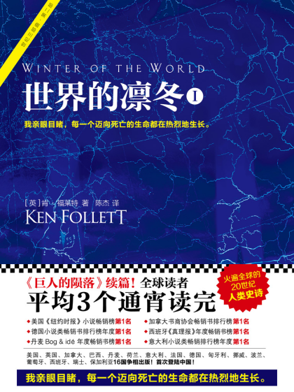
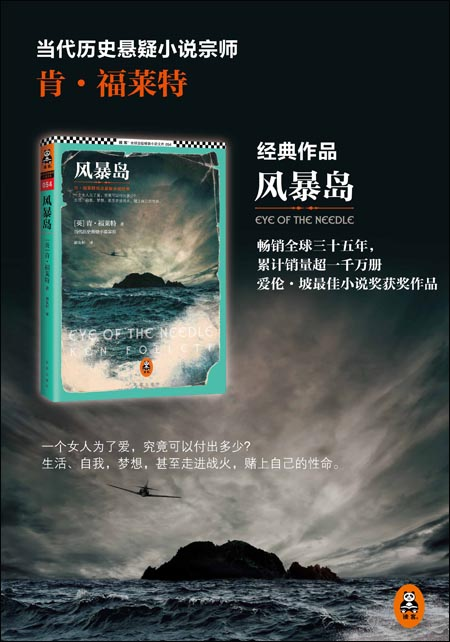
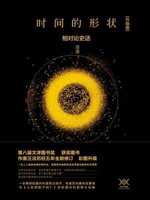

小说类
《世界的凛冬》
肯·福莱特三部曲中的第二部，通过延续了第一部中的几个家庭，讲述了第二次世界大战的全部过程。
这本书虽然是历史小说，但是侧重于人物的刻画，对于战争过程的描述比较少，感觉跟第一部差别较大。关于第二次世界大战的一些重要事件随着情节的展开都进行了描写。
我觉得比较有意思的是，他在写一些历史人物的时候，如希特勒、斯大林，在小说中都用近距离的手法进行了描述，有一种带入感。让人读起来有一种，身临其境的感觉。会不自觉地想：哦，原来希特勒当时是这样说的，斯大林是这样做的。他们是这样的人啊。让曾经只是在历史书中的人物走到你的面前了。但是不可避免的问题就是，作者肯定有一些偏向性，也不能保证他描写的人物的特征就是真实的。

《风暴岛》
据说是肯·福莱特的第一部小说，开始看也是因为看了《巨人的陨落》之后，觉得同是讲第一次世界大战，便一起看了。
这本书相对于《巨人的陨落》而言，情节更加紧凑，有点好莱坞谍战片的感觉。搏斗的描写很精彩，不过似乎性描写有些露骨了，跟谍战小说差异好大的感觉。

科普类
时间的形状：相对论史话

政治历史类
论中国
毛泽东：雄关漫道
励志类
暗时间
数据分析类
利用Python进行数据分析
数学之美
TensorFlow实战
面向机器智能的TensorFlow实践